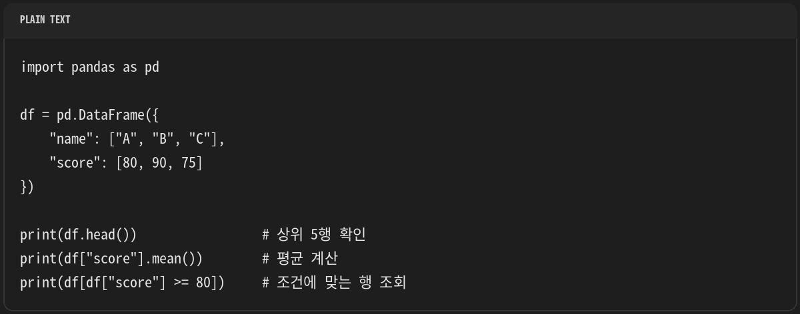
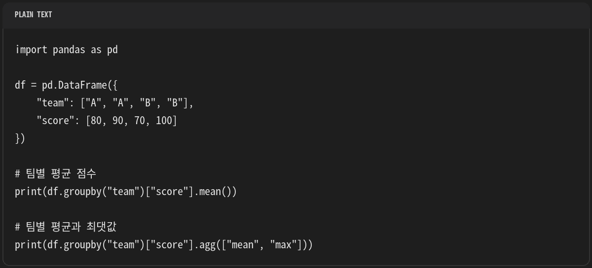
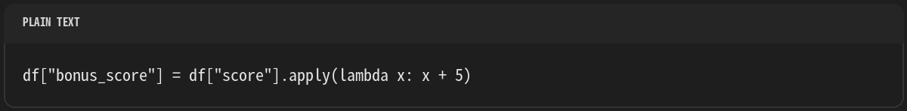

📚 2주차 Python 데이터 분석 (2026.10.21 Wed ~ 2026.10.23 Fri)
Total : 3 days
📕 B. Pandas (2026.10.22 Thu)
📃 a. Pandas 기본
- Pandas : 데이터를 표(Table) 형태로 저장하고 분석·가공하는 Python 라이브러리
- Series : 1차원 데이터 구조
- DataFrame : 행(Row)과 열(Column)로 구성된 2차원 데이터 구조
- 주요 활용 : 데이터 조회, 필터링, 정렬, 결측치 처리, 통계 분석

PLAIN TEXT 코드
📃 Pandas 주요 문법
| 문법 | 기능 |
|---|---|
pd.read_csv("data.csv") | CSV 파일 불러오기 |
df.head() | 상위 5행 확인 |
df.info() | 열의 자료형 및 데이터 정보 확인 |
df.describe() | 수치형 데이터의 기초 통계 확인 |
df.shape | 행과 열의 개수 확인 |
df["컬럼명"] | 특정 열 선택 |
df.loc[] | 인덱스·레이블 기반 조회 |
df.iloc[] | 정수 위치 기반 조회 |
df.isnull().sum() | 열별 결측치 개수 확인 |
df.dropna() | 결측치가 있는 행 제거 |
df.sort_values() | 특정 열 기준 정렬 |
📃 b. Pandas 심화 (groupby, agg, apply)
groupby(): 특정 기준으로 데이터를 그룹화agg(): 그룹별 합계, 평균, 최댓값 등 여러 통계 계산apply(): 행이나 열 또는 그룹에 사용자 정의 함수를 적용

PLAIN TEXT 코드
apply() 예시

PLAIN TEXT 코드
lambda: 간단한 함수를 한 줄로 작성하는 문법- 위 코드는 모든 점수에 5점을 더한 새 열을 생성
💡 핵심 요약
- Pandas : 표 형태의 데이터를 조회·가공·분석하는 라이브러리
- DataFrame : 행과 열로 구성된 핵심 데이터 구조
- 기본 문법 : 데이터 불러오기, 조회, 필터링, 결측치 확인
groupby(): 기준별 데이터 그룹화agg(): 그룹별 통계 요약apply(): 함수로 데이터 변환 및 처리
🎯 학습 목표: Pandas로 데이터를 불러오고 정리하며, groupby(), agg(), apply()를 활용해 데이터를 그룹별로 분석할 수 있다.